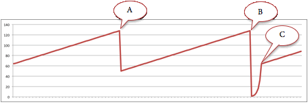

CS 352 Exam 2
Spring 2013
-
[this is not applicable to the forthcoming exam #2]
Which peer-to-peer file sharing system relies on flooding for content discovery?
(a) Napster
(b) Gnutella
(c) BitTorrent
(d) Chord DHT -
[this is not applicable to the forthcoming exam #2]
Which peer-to-peer file sharing system is self-scaling for file downloads? That is, which system scales the bandwidth available to download a file as more users download that file?
(a) Napster
(b) Gnutella
(c) BitTorrent
(d) Chord DHT -
[this is not applicable to the forthcoming exam #2]
A Kazaa ultrapeer:
(a) Avoids the need to query normal peers.
(b) Forwards queries to all of its connected normal peers.
(c) Is like a normal peer but hosts more content.
(d) Is a central server that keeps track of all the peers in the system. -
[this is not applicable to the forthcoming exam #2]
A .torrent file in BitTorrent includes:
(a) The location of the tracker for the desired file.
(b) The location of seed nodes containing the file.
(c) The file data that is later distributed among peers.
(d) Just initial parts of the file data. -
[this is not applicable to the forthcoming exam #2]
If a node leaves a Chord DHT (Distributed Hash Table), its (key, value) data:
(a) Moves to its successor node.
(b) Moves to its predecessor node.
(c) Is split between the predecessor and successor nodes.
(d) Is split among all remaining nodes. - Why might using UDP instead of TCP be appealing?
(a) UDP supports much larger segment sizes.
(b) UDP uses a checksum to ensure data integrity.
(c) UDP segments are sent immediately.
(d) UDP segments are sequenced to arrive in order. - What is the eight-bit Internet checksum of the two bytes {0xff, 0xff} (in binary: 1111 1111, 1111 1111)?
(a) 0x00 (0000 0000)
(b) 0x01 (0000 0001)
(c) 0xfe (1111 1110)
(d) 0xff (1111 1111) - Sequence numbers in a stop-and-wait protocol are useful for:
(a) Ensuring data is delivered in the correct order.
(b) Distinguishing a new message from a duplicate.
(c) Keeping track of the total number of messages sent.
(d) Matching the receive window size with the transmit window size. - You have a 1 Gbps network. The packet size is 1,000 bits and there is a 10 ms (10-2 s) round-trip time between two hosts. What is the approximate network utilization with a stop-and-wait protocol?
(a) 0.01%
(b) 1%
(c) 10%
(d) Almost 100% - With Go-Back-N, a segment can be deleted from the send buffer only when:
(a) It has been successfully received by the receiver.
(b) It and all prior segments have been successfully received by the receiver.
(c) All segments in the window have been successfully received by the receiver.
(d) The countdown timer expires after sending all segments in the window to the receiver. - In a Go-Back-N protocol, a sender sends segments 5, 6, and 7. It gets back acknowledgements for segments 5 and 7. The acknowledgement for segment 6 does not arrive. What happens?
(a) The sender moves the base of its window to segment 8.
(b) The sender retransmits segment 6 upon getting the acknowledgement for segment 7.
(c) The sender retransmits segment 6 upon getting a timeout.
(d) The sender advances the base of its window to segment 6 and waits. - Path MTU (Maximum Transmission Unit) discovery relies on:
(a) The ability to send a query to a router for its MTU size.
(b) The ability to turn off fragmentation.
(c) Committing to an unchanging end-to-end route.
(d) Negotiating with the receiver to pick the maximum MTU that both can support. - TCP without the Selective Acknowledgement (SACK) option behaves like a Go-Back-N protocol except that:
(a) Only the earliest unacknowledged segment is sent upon timeout.
(b) All unacknowledged segments are sent upon timeout.
(c) All segments in the current window are sent upon timeout.
(d) Only the last unacknowledged segment is sent upon timeout. - A TCP header does not have this field:
(a) Source address
(b) Destination port
(c) Sequence number
(d) Checksum - Host A sends the following consecutive TCP segments to host B: (1) sequence #1000, 500 bytes; (2) 500 bytes;
(3) 500 bytes. Host B receives only segments #1 and #3. What ACK does it send upon receiving segment #3?
(a) 1000
(b) 1500
(c) 2000
(d) 2500 - Suppose host B now receives segment #2 (after it receives segment #3). What ACK does it send back to host A?
(a) 1000
(b) 1500
(c) 2000
(d) 2500 - TCP's Slow Start:
(a) Provides an additive (linear) increase in transmission rate.
(b) Delays data transmission until a TCP connection is established.
(c) Provides a multiplicative decrease in the transmission rate.
(d) Provides an exponential increase in transmission rate. - The chart above shows TCP's congestion window over time. What happened at (A)?
(a) A retransmission timer expired.
(b) Three duplicate ACKs were received.
(c) The maximum window size was reached.
(d) Thessthreshvalue was reached. - What happened at (B)?
(a) A retransmission timer expired.
(b) Three duplicate ACKs were received.
(c) The maximum window size was reached.
(d) Thessthreshvalue was reached. - What happened at (C)?
(a) A retransmission timer expired.
(b) Three duplicate ACKs were received.
(c) The maximum window size was reached.
(d) Thessthreshvalue was reached. - TCP Fast Retransmit retransmits:
(a) One segment without waiting for a timeout.
(b) Every unacknowledged segment if it detects the loss of one segment.
(c) A segment immediately upon getting a negative ACK from the sender.
(d) Retransmits a segment upon getting a retransmission timeout. - Which router architecture does not require replicating the forwarding table?
(a) Conventional shared memory.
(b) Shared memory with distributed CPUs.
(c) Shared bus, no shared memory.
(d) Switched data path. - Which field is NOT in an IPv4 header?
(a) Header length.
(b) Time to live (hop limit).
(c) ACK number.
(d) Header checksum. - The minimum condition for an IP receiver to know the size of a reassembled IP datagram is when:
(a) It has received all fragments of the datagram.
(b) It has received the last fragment of a datagram, but not necessarily all fragments.
(c) It has received the first fragment of a datagram.
(d) When it has received any fragment since all fragments contain the full datagram length. - Which is a valid IP address on a 132.15.4.0/22 network?
(a) 132.15.10.7
(b) 132.15.9.8
(c) 132.15.8.9
(d) 132.15.7.10 - In DHCP, the Dynamic Host Configuration Protocol, the DHCP server communicates back to the client via a(an):
(a) UDP message to the client DHCP process.
(b) UDP broadcast to all machines on the LAN
(c) TCP message to the client DHCP process.
(d) ICMP message to the client machine. - NAT, Network Address Translation, requires that all the machines in the internal network:
(a) Have private addresses that are not valid on the wide-area Internet.
(b) Share the same IP address.
(c) Contact a DHCP server to get an on-demand address assignment.
(d) Contact a NAT server to get an address assignment. - The Internet Control Message Protocol (ICMP) is likely to be used to:
(a) Get a unique IP address.
(b) Choose one of several available routes.
(c) Find out that the time-to-live expired on an IP packet.
(d) Define a route for an IP datagram. - Which header does not have a checksum in it?
(a) IPv4
(b) IPv6
(c) TCP
(d) UDP - IPv6 does not have which of the following IPv4 headers (same or similar names)?
(a) Protocol version.
(b) Time to live (hop limit).
(c) Source IP address.
(d) Fragment offset. - ARQ (Automatic Request) protocols avoid the need to use ACKs by having a server automatically resend each segment.
[True] [False] - A countdown timer is not needed in a protocol that uses ACKs and sequence numbers.
[True] [False] - UDP allows different processes to send messages to the same socket at a server.
[True] [False] - Increasing the congestion window size increases TCP's transmission rate.
[True] [False] - The Congestion Avoidance state provides an additive increase to the transmission rate.
[True] [False] - TCP requires a Virtual Circuit network since it requires connection service at the network layer.
[True] [False] - A router has to recompute the IP header checksum.
[True] [False] - The control plane of a router is responsible for forwarding datagrams between ports.
[True] [False] - Under NAT, two different computers in an organization may appear to an outsider as having the same IP address.
[True] [False] - A router that fragments an IP datagram that carries TCP data must replicate the TCP header onto each fragment.
[True] [False]
PART I – 90 points – 3 points each
For each statement, select the most appropriate answer.